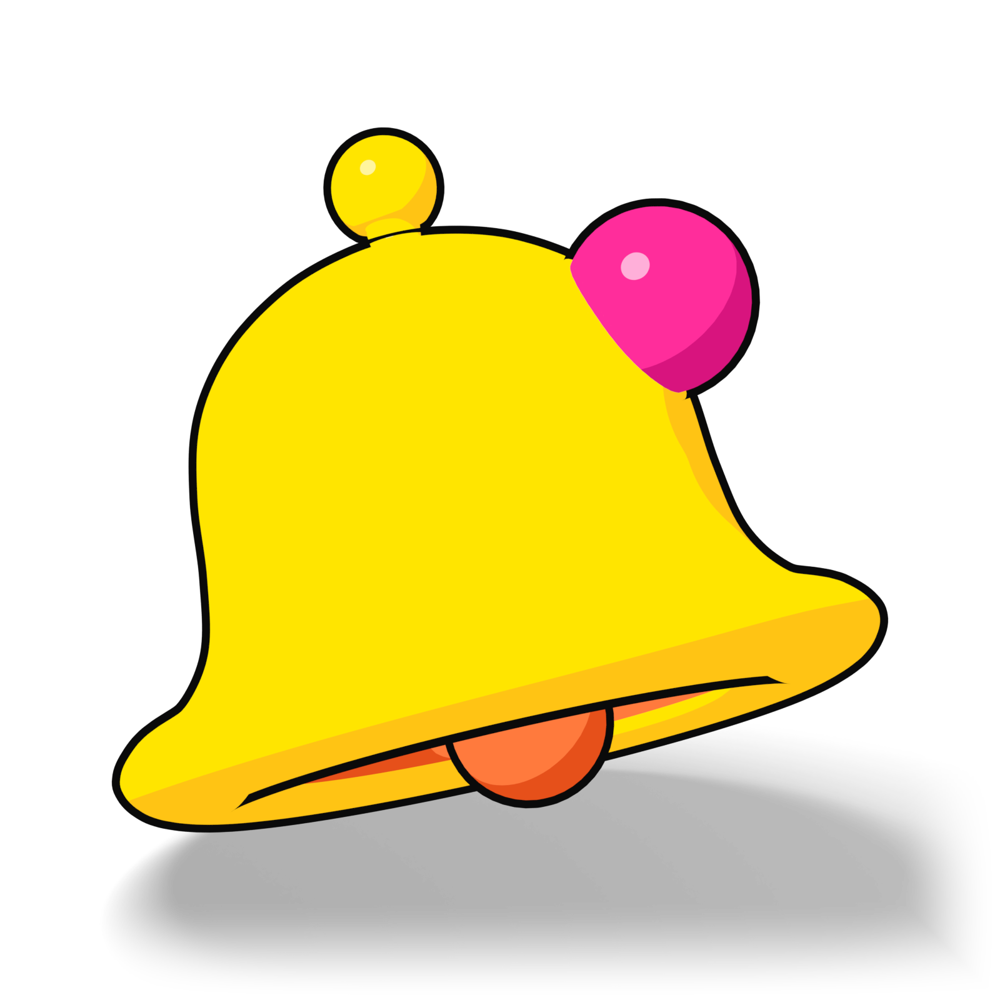

Labor, 2026. szeptember 26.
Rajzok és 3D a Pop stílushoz
Az első készlet: tizenkét lapos rajz SVG-ben és négy tárgy 3D-ben, a Pop színeivel, fekete körvonallal és kemény árnyékkal. Előbb egyenként látod őket, aztán a helyükön: a főoldal tetején, az alkalmazás egyik üres képernyőjén és a súgó kategóriáinál.
- 12 SVG-rajz
- 4 render, 1600 px
- 1 forgó videó

Blenderben készült
Tizenkét rajz, négy alapon
Egy rajz, egy tárgy, legfeljebb egy apró kiegészítővel. Kitöltés a Pop színeiből, 2,5 pixeles körvonal és egy 7 pixellel eltolt, tömör árnyék. A körvonal és az árnyék a környező szöveg színét veszi át: világos alapon fekete, sötét alapon fehér, ugyanabból a fájlból.
Fehér alapon
NyugtaNapi jelentés svg/nyugta.svg SzövegbuborékVálaszok svg/buborek.svg CsengőRiasztás svg/csengo.svg TelefonTelefonon, a Válaszok fül svg/telefon.svg Asztali kártyaÉrtékeléskérés QR-rel svg/asztali-kartya.svg NagyítóÉrtékelések, keresés svg/nagyito.svg NaptárKimutatások, időszakok svg/naptar.svg TérképtűÉttermek svg/terkeptu.svg KávéA reggel, a jelentés ideje svg/kave.svg PapírzacskóCsomagok, előfizetés svg/zacsko.svg Csiptetős táblaKezdés, teendők svg/tabla.svg Üres tálcaÜres állapotok svg/talca.svg
Sárga blokkon: ugyanaz a tizenkét rajz
Kék blokkon: ugyanaz a tizenkét rajz
Kék alapon a körvonal és az árnyék fekete marad, mint a weboldal kártyáin (3,15:1, egy rajznak ennyi elég). Fehérre is váltható, az 6,28:1.
Fekete alapon: ugyanaz a tizenkét rajz
Ugyanazok a fájlok: a körvonal és az árnyék fehér, mert a doboz szövegszíne fehér. A testek mindig színesek, fehér csak betét lehet (képernyő, lencse, QR-lap), különben itt összefolyna a saját fehér árnyékával.
Négy tárgy 3D-ben
Blenderben modellezve, parancssorból renderelve ezen a gépen. A színt nem a fény adja: a megvilágított oldal pontosan a Pop színe, a fénytől elforduló oldal ugyanannak egy mélyebb tónusa. A körvonal egy kifordított burok, az árnyék külön menetben készül, és csak a talajon van. A háttér átlátszó, ezért bármelyik blokkra rátehető.
-

Telefon a válaszok listájával
-

Szövegbuborék
-

Csengő
-

Asztali kártya QR-mintával
-
Egy fordulat, öt másodperc

A helyükön
Három makett. A szövegek a weboldal szövegkönyvéből valók, az éttermek és a nevek kitaláltak, a gombok itt nem csinálnak semmit.
A főoldal teteje, a telefonnal
Minden értékelés. Egy helyen.
A BistroTech letölti az éttermeid Google-értékeléseit, megírja rájuk a választ, és reggelente elküldi, mi történt tegnap. Minden választ te hagysz jóvá.

14 napigingyen
Üres állapot az alkalmazásban
Válaszok
Itt olvasod el a válaszokat, mielőtt kimennek a Google-re.
Minden választ átnéztél
Ha új értékelés jön, megírjuk rá a választ, és itt találod.
Értékelések megnyitása- Ma
- Értékelések
- Válaszok
- Kimutatások
A Pop alkalmazásban az üres állapot kaphat színes blokkot (POP-SYSTEM, 6. pont). A tálca ugyanazt mondja, amit a cím: ma nincs több teendő. A pipás matrica az egyetlen kiegészítő.
Egy rajz itt kb. 176 px-en áll, a körvonala ekkor 1,8 px, közel a kártyák 2 px-es vonalához. Ugyanez a szabály minden üres állapotra: egy tárgy, egy mondat, egy gomb.
Súgó: a kategóriák
Kezdés
Regisztráció, az első étterem és a Google-hozzáférés.
Napi jelentés
Mikor érkezik, mi van benne, és hogyan kötöd össze a Telegrammal.
Értékelések
Keresés és szűrés étterem és csillag szerint.
Válaszok
Jóváhagyás, átírás és kihagyás.
Kimutatások
Témák, éttermek egymás mellett, napszakok.
Csapat és fiók
Kollégák meghívása, és ki melyik éttermet látja.
Előfizetés
Csomagok, próbaidő és számla.
Nem találod?
Keress a súgóban, például: napi jelentés
Így készülnek
A következő rajz és a következő render is ezekhez tartja magát. A rajzok forrása a tools/build_svg.py, a 3D-s tárgyaké a blender/ mappa szkriptjei; mindkettő újrafuttatható, és ugyanazt adja.
Rajz, SVG
- 240 × 240-es vászon, egy tárgy, legfeljebb egy apró kiegészítő: egy matrica vagy egy pipa.
- Kitöltés csak a Pop színeiből. A test mindig színes; fehér csak betét lehet.
- Körvonal 2,5 px, lekerekített sarkokkal és végekkel. Belső részlet fekete, 6 px.
- Árnyék: ugyanaz a forma tömören, 7 px-lel jobbra és lefelé, elmosás nélkül.
- Körvonal és árnyék:
currentColor. Beágyazva a szöveg színét követi,img-ként mindig fekete. - Nincs színátmenet, és nincs betű a rajzban.
3D, Blender
- Vaskos, játékszerű formák, nagy lekerekítéssel.
- Toon-árnyalás fény nélkül: a világos oldal pontosan a Pop színe, az árnyékos oldal ugyanannak mélyebb tónusa, sosem szürke.
- Csillanás csak kis, kerek részen: gomb, pötty, matrica.
- Fekete körvonal kifordított burokkal, 1600 px-en kb. 10 px. Ahol két rész egymáson ül, fekete alátét rajzolja a vonalat.
- Árnyék csak a talajon, lágyan, külön menetben.
- Átlátszó háttér, 1600 px-es PNG és WebP. A videó színes blokkon.
Soha
Csillag díszként, a BistroTech jel 3D-ben vagy mélységgel, gépember, agy, séfsapka, búra, keresztbe tett evőeszköz, mosolygó buborék, valódi étterem, ember.
Beépítés
Egy rajz a lap szövegszínét veszi át, ha beágyazod: az oldal elején egyszer a rajzok, utána bárhol egy sor.
<svg class='ill' viewBox='0 0 240 240' aria-hidden='true'><use href='#ill-buborek'/></svg>
.blk-ink .ill { color: #fff; } /* sötét alapon fehér körvonal és árnyék */